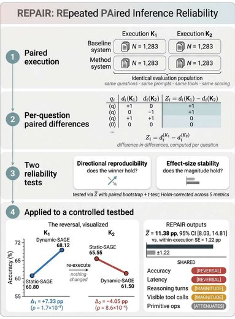

Accuracy and Cost Claims Do Not Survive Re-Execution in Agentic VideoQA

In one sentence. Shows that accuracy and cost claims in agentic VideoQA can reverse when the same evaluation is re-run, and introduces REPAIR, a protocol that tests whether a paired method effect is reproducible.
Abstract
Agentic Video Question Answering (VideoQA) systems produce answers through adaptive reasoning and tool-use trajectories, yet standard practice evaluates each system once and estimates uncertainty only across questions. This leaves a basic question untested: would the measured method effect survive if the evaluation were run again? We show that it need not. Using Static-SAGE and Dynamic-SAGE as a controlled case study, we repeat the paired comparison twice on identical SAGE-Bench question-video pairs, holding configuration, tool library, and scoring protocol fixed. In the first execution, Dynamic-SAGE outperforms Static-SAGE by +7.33 accuracy points; in the second, the effect reverses to -4.05. Both are individually significant under paired analysis, supporting opposite conclusions. The change in the paired effect between executions is highly significant and far larger than within-execution uncertainty. The reversal is consistent across question format, modality, difficulty, and video duration, and both evaluation arms move significantly. Motivated by this failure, we introduce REPAIR (REpeated PAired Inference Reliability), a protocol that repeats the paired comparison and tests whether the method effect changes across executions, separating directional reproducibility from effect-size stability. Applied across accuracy and execution metrics, REPAIR exposes three behaviors-directional reversal, magnitude shift, and effect attenuationand shows that reductions in reasoning turns and visible tool calls do not imply reproducible reductions in primitive computation or latency. The execution-level movement is comparable to, and here larger than, median gain reported by recent agentic VideoQA systems, contextualizing its magnitude without implying those systems are unstable. Significance within a single agentic execution is insufficient evidence that a reported method effect is reproducible.
This work was led by an undergraduate student in our lab whom I mentor; I contributed in an advisory role.
BibTeX
@article{alhamidi2026accuracy,
title = {Accuracy and Cost Claims Do Not Survive Re-Execution in Agentic VideoQA},
author = {AlHamidi, Rama and Mohamed, Aseel and Khanbayov, Rasul and Barhdadi, Mohamed Rayan and Serpedin, Erchin and Kurban, Hasan},
journal = {arXiv preprint arXiv:2607.01469},
year = {2026}
}